Stretch RE2 - Hardware Guide
This manual provides the engineering data and user guidance for working with the Hello Robot Stretch RE2 hardware.
Disclaimer
The Hello Robot Stretch is intended for use in the research of mobile manipulation applications by users experienced in the use and programming of research robots. This product is not intended for general use in the home by consumers, and lacks the required certifications for such use. Please see the section on Regulatory Compliance for further details.
Functional Specification
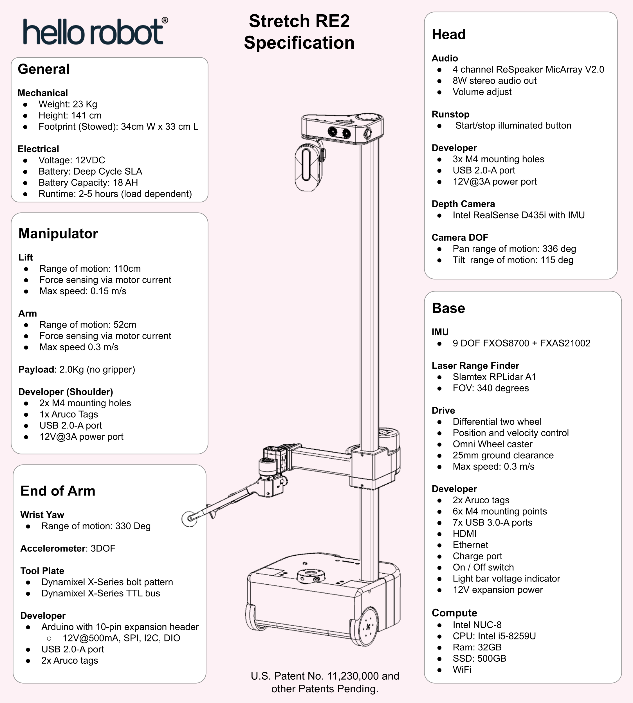
Body Plan
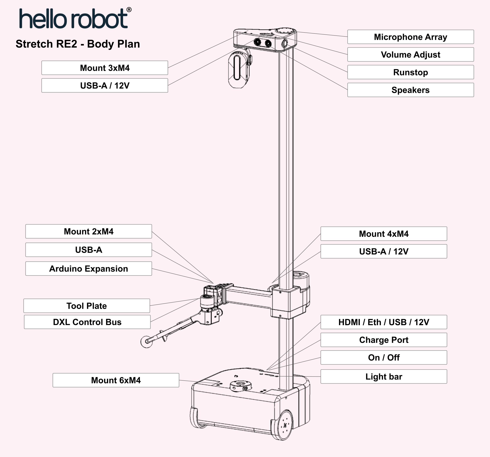
Hardware Architecture
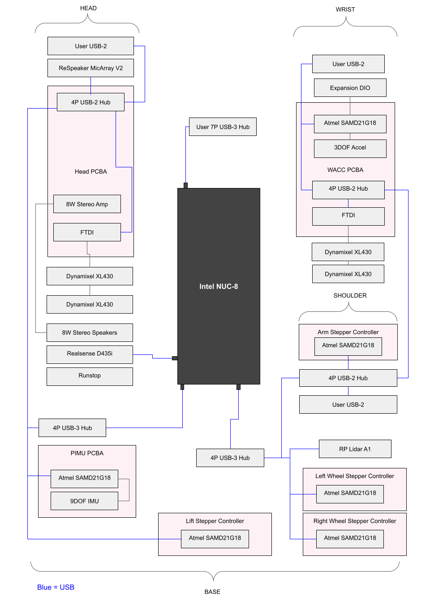
Robot Subsystems
Base
The base is a two wheel differential drive with a passive Mecanum wheel for a caster. It includes four cliff sensors to allow detection of stairs, thresholds, etc.

| Item | Notes | |
| A | Drive wheels | 4 inch diameter, urethane rubber shore 60A |
| B | Cliff sensors | Sharp GP2Y0A51SK0F, Analog, range 2-15 cm |
| C | Mecanum wheel | Diameter 50mm |
The base has 6 M4 threaded inserts available for mounting user accessories such as a tray. The mounting pattern is shown below.
The inserts are recessed 1mm from the top of the base shell.
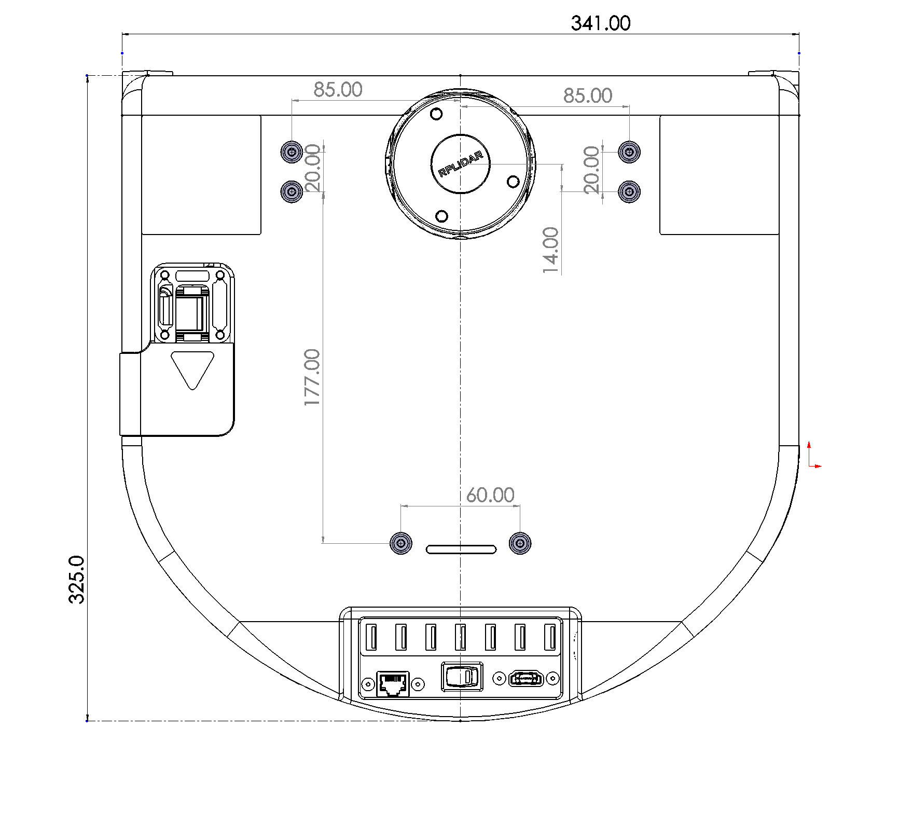

Base IMU
The base has a 9 DOF IMU using the 9 DOF FXOS8700 + FXAS21002 chipset. The IMU orientation is as shown below:


Trunk
Development and charge ports are at the back of the base in the trunk.
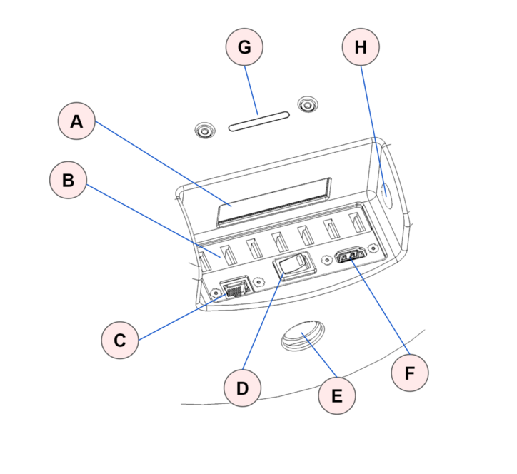
| Item | Notes | |
| A | Vent | Intake vent for computer fan |
| B | 6 Port USB Hub | USB 3.0 , powered 5V/3A |
| C | Ethernet | Connected to computer NIC |
| D | On/Off | Robot power on / off. Switch is illuminated when on. |
| E | Charge | Rated for upplied 12V/7A charger |
| F | HDMI | Connected to computer HDMI |
| G | LED Light Bar | Indicates battery voltage |
| H | 12V access plug | Allows customer cable access to 12V Aux on Pimu PCBA |
Head
The head provides the audio interface to the robot, a pan tilt depth camera, a runstop, as well as a developer interface to allow the addition of additional user hardware.
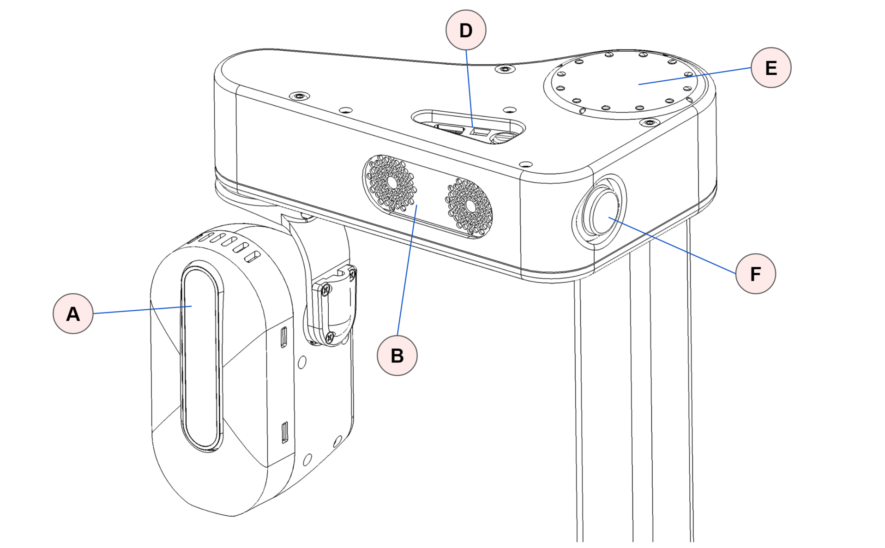
| Item | Notes | |
| A | Pan tilt depth camera | Intel RealSense D435i Two Dynamixel XL430-W250-T servos |
| B | Speakers | |
| D | Developer Interface | Volume control, USB2.0-A with 5V@500mA fused JST XHP-2, 12V@3A fused Pin 1: 12V Pin 2: GND |
| E | Microphone array | With programmable 12 RGB LED ring |
| F | Runstop |
Pan Tilt
The head pan-tilt unit utilizes two Dynamixel XL430-W250-T servos. It incorporates a small fan in order to ensure proper cooling of the servo and camera during dynamic repeated motions of the tilt DOF.
The nominal ‘zero’ position is of the head is shown below, along with the corresponding range of motion.
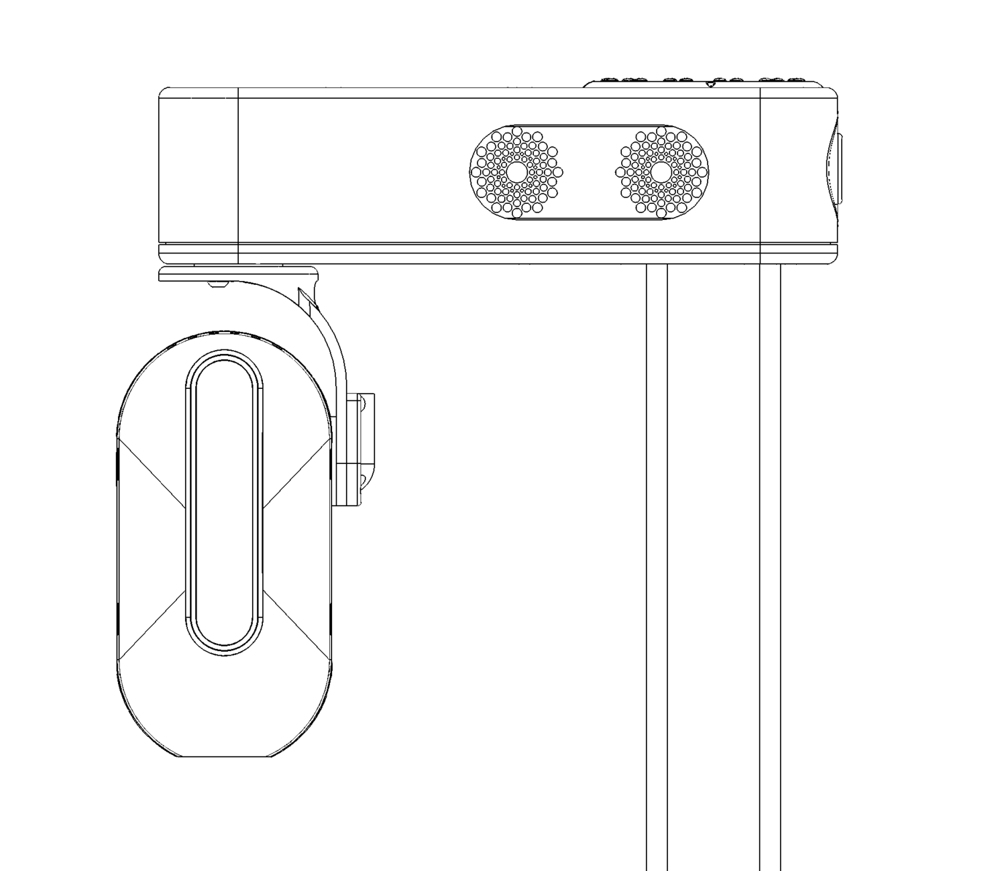
| DOF | Range (deg) | Min(deg) | Max (deg) |
| Pan | 346 | -234 | 112 |
| Tilt | 115 | -25 | 90 |
ReSpeaker Microphone Array
The ReSPeaker has 12 RGB LEDs that can be controlled programatically. By default they display sound intensity and direction of the microphone array. The ReSpeaker has 4 mems microphones mounted on a 64.61mm circle at 45 degree spacing. The drawing below shows the position and orientation of the microphone array relative to the head pan axis.
Mounting Points
The top of the head includes 3x M4 threaded mounting points as shown below.
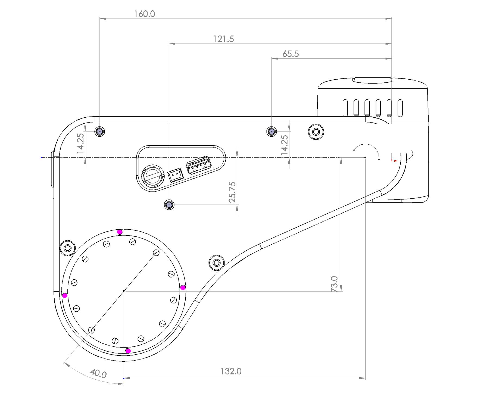
Runstop
The runstop allows the user to pause the motion of the four primary DOF (base, lift, and arm) by tapping the illuminated button on the head. When the runstop is enabled, these DOF are in a ‘Safety Mode’ that inhibits the motion controller at the firmware level. Disabling the runstop allows normal operation to resume.
Lift
The lift degree of freedom provides vertical translation of the arm. It is driven by a closed loop stepper motor, providing smooth and precise motion through a low gear-ratio belt drive. The ‘shoulder’ includes four mounting holes and a small delivery tray.
NOTE: When using the shoulder mounting screws do not use M4 bolts longer than 7mm in length. Otherwise damage may occur.
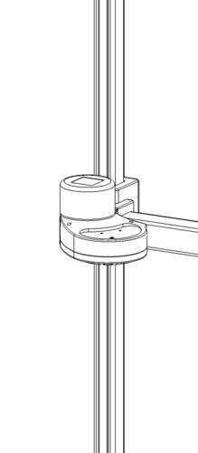
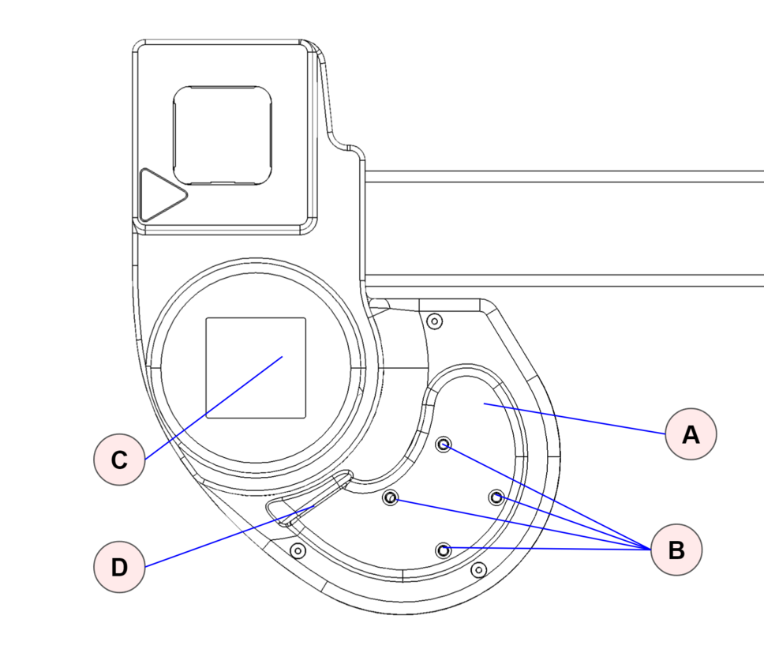
| Item | Notes | |
| A | Delivery tray | |
| B | Mounting holes | Threaded M4. Length not to exceed 7mm. |
| C | Aruco Tag | Size 40x40 mm |
| D | Developer ports | USB2.0-A with 5V@500mA fused ; JST XHP-2, 12V@3A fused Pin 1: 12V Pin 2: GND |
Arm
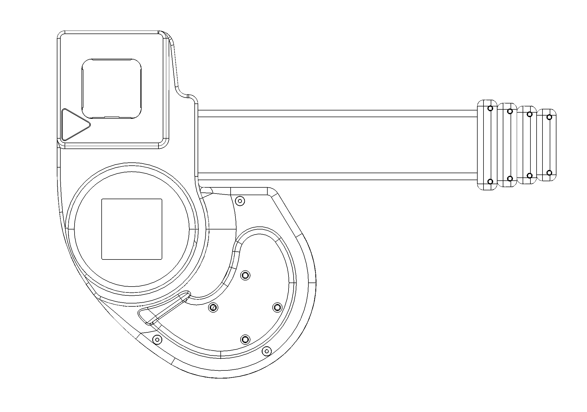
The arm comprises 5 telescoping carbon fiber links set on rollers. Its proprietary drive train is driven by a stepper motor with closed loop control and current sensing, allowing contact sensitivity during motion.
The arm exhibits a small amount of play (lash) in the X, Y, Z, and theta directions which is a normal characteristic of its design. Despite this it can achieve good repeatability, in part because its gravity loading is fairly constant.
The retracted arm and wrist combined are designed to fit within the footprint of the base. The arm is designed to have:
- Reach: 0.52m
Wrist
The wrist includes:
- Yaw DOF to allow for stowing of the tool
- 2 Aruco tags for calibration and visual localization of the tool
- Expansion port with
- Arduino expansion header
- USB-A connector
- Tool plate with dual sided mounting
- Dynamixel X-Series TTL bus
Wrist Control Interface
The wrist yaw degree-of-freedom uses a Dynamixel XL430 servo. Additional Dynamixel servos can be daisy chained off of this servo, allowing for one more additional degree-of-freedoms to be easily integrated onto the robot (such as the provided Stretch Gripper).
Stretch comes with a XL430 compatible control cable preinstalled into this servo. If a different cable needs to be installed the servo cap can be removed as shown.

Wrist Tool Plate
The tool plate allows for mounting on the top or the bottom using the M2 bolt pattern. The mounting pattern is compatible with Robotis Dynamixel frames as well:
The tool plate includes a 'Zero indicator'. This mark indicates the forward position of the tool. It will point in the direction of the arm extension when the wrist yaw joint is at its zero position.
In addition, the tool plate includes two index holes. These can be used to index a tool (e.g., Stretch Gripper) during installation. Compatible pins on the tool ensure that it is installed at the correct orientation.

Wrist Yaw Range of Motion
The wrist yaw DOF is calibrated so that the index hole faces forward at the 'zero' position. From this pose the wrist has a ROM of +256/-76 degrees as shown.
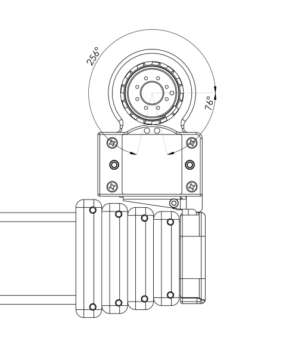
Wrist Accelerometer
The wrist includes a 3 axis ADXL343 accelerometer which provides bump and tap detection capabilities. The sensor is mounted inside the distal link of the arm as shown below.


Wrist Expansion USB
The wrist includes a USB 2.0 A interface. This power to this USB port is fused to 500mA@5V.
Wrist Expansion Header
The wrist includes an expansion header that provides access to pins of the wrist Arduino board. The header connector can be accessed by removing the cap at the end of the arm.
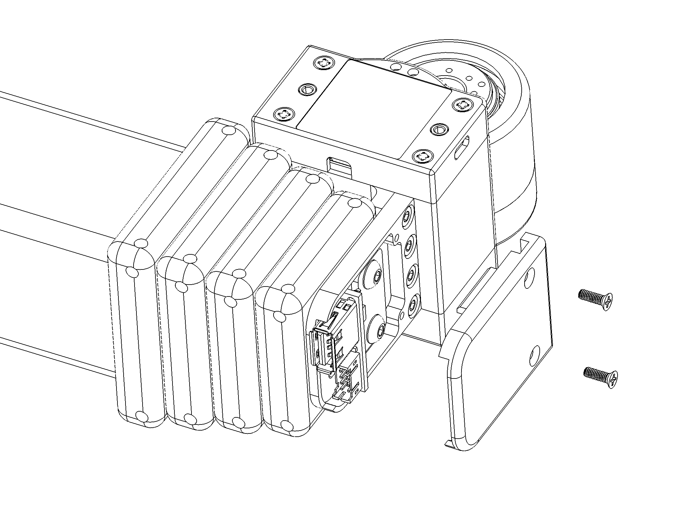
The header is wired to a Atmel SAMD21G18A-AUT (datasheet) microcontroller (same as Arduino Zero). The expansion header pins are configured at the factory to allow:
- General purpose digital I/O
- Analog input
In addition, the firmware can be configured for other pin functions, including:
- Serial SPI
- Serial I2C
- Serial UART
The Stretch Firmware Manual covers this modification.
The header pins utilize 3V3 TTL logic. They have limited nterface protection (eg, ESD, over-voltage, shorts). It is possible to damage your robot if pin specifications are exceeded
The pin mapping is:
| Pin | Name | Function | Factory Firmware |
| 1 | DGND | Digital ground | |
| 2 | 3V3 | 3.3V supply fused at 250mA. | |
| 3 | E12V | 12VDC fused at 500mA | |
| 4 | SS | DIO | SPI SS | Digital out (D3) |
| 5 | SCK | DIO | SPI SCK | Digital out (D2) |
| 6 | MISO | DIO | SPI MISO |UART TX | Digital in (D0) |
| 7 | MOSI | DIO | SPI MOSI | UART RX | Digital in (D1) |
| 8 | SCL | DIO | I2C SCL | Not used |
| 9 | SS | DIO | I2C SDA | Not used |
| 10 | ANA0 | Analog input | Analog in (A0) |
The expansion DIO uses a 10 pin JST header B10B-PHDSS(LF)(SN). It is compatible with a JST PHDR-10VS housing. JST provides pre-crimped wire compatible with this housing ( part APAPA22K305).
Pin 1 & 10 are indicated below.
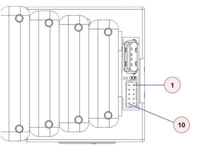
The expansion DIO schematic shown below.
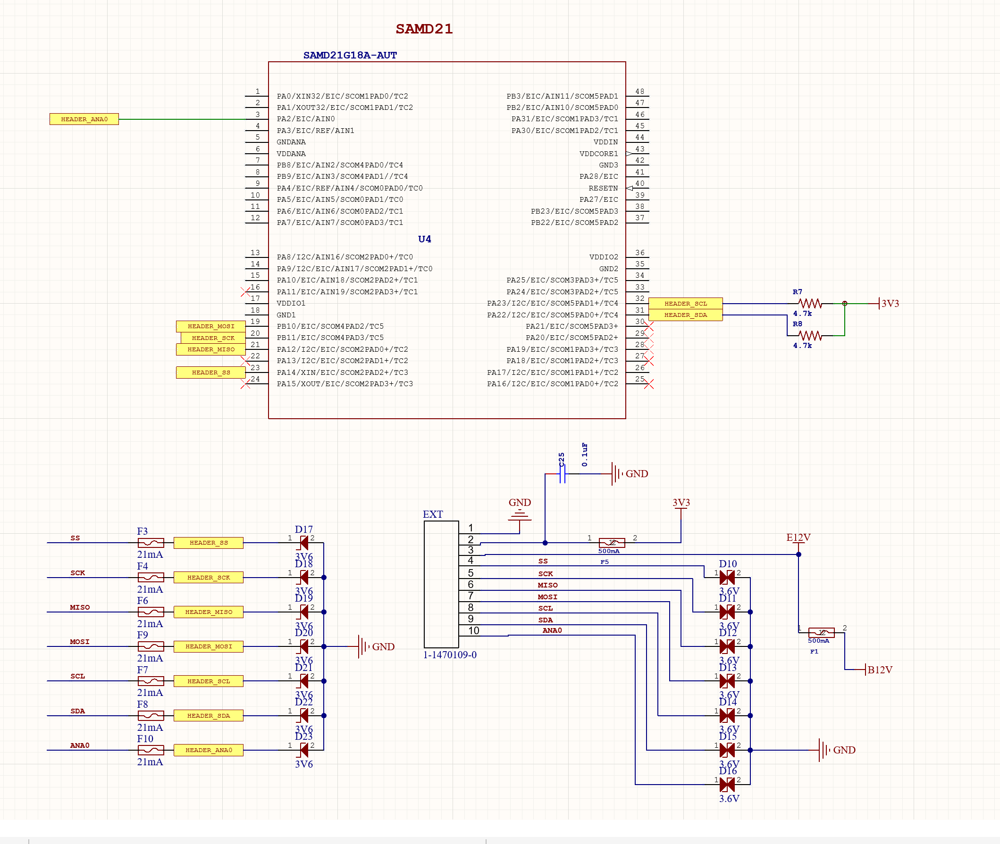
Wrist Mounts
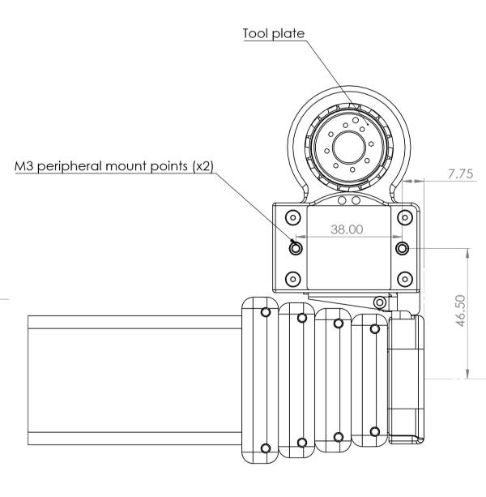
Gripper
The Stretch Compliant Gripper utilizes a Dynamixel XL430-W250-T servo to drive the spring grasper mechanism. The kinematics of the grasper mechanism are complex and non-linear relative to the motor position. As shown, it includes mounting features on one side to allow for attachment of simple rigid tools such as hooks and pullers.

| Item | Notes | |
| A | Stud attachment | Threaded 6-32 |
| B | Thread attahcment | Threaded M4 |
The attachment features are spaced at 9mm.
The weight of the Stretch Compliant Gripper is 240g.
Gripper Removal
Here we describe removing the Stretch Compliant gripper. Installation is simply these steps in reverse.
- Unplug the Dynamixel cable from the back of the gripper.
- Remove the 4 screws holding the gripper to the bracket.
- Remove the gripper from the mounting bracket
- Unscrew the 8 screws holding the mounting bracket to the bottom of the tool plate.


Robot Care
Battery Maintenance
Please review the Battery Maintenance Guide for proper care and charging of the Stretch batteries.
Belt Tension
A neoprene timing belt drives the arm up and down the lift. It may detension over long periods of time if it experiences sustained loading. In this case, slack will become visually apparent in the belt as the lift moves.
The belt is very straightforward to re-tension. Please contact support@hello-robot.com for tensioning instructions.
Keeping the Robot Clean
The robot surfaces can be wiped down with an alcohol wipe or a moist rag from time to time in order to remove and debris or oils that accumulate on the shells or mast.
The drive wheels can accumulate dust over time and begin to lose traction. They should be periodically wiped down as well.
When possible, the Trunk cover for the base should be kept on in order to keep dust and debris out of the Trunk connectors.
If the D435i camera requires cleaning use appropriate lens cleaning fluid and a microfiber cloth.
Keeping the Robot Calibrated
The robot comes pre-calibrated with a robot-specific URDF. This calibration allows the D435i depth sensor to accurately estimate where the robot wrist, and body, is in the depth image.
The robot may become slightly uncalibrated over time for a variety of reasons:
- Normal wear and tear and loosening of joints of the robot
- The head structure is accidentally load and the structure becomes very slightly bent
- The wrist and should structure become accidentally highly loaded and become slightly bent
The calibration accuracy can be checked using the provided ROS tools. If necessary, the user can recalibrate the robot. See the Stretch URDF Calibration Guide for more information.
Transporting the Robot
Stretch was designed to be easily transported in the back of a car, up a stair case, or around a building.
For short trips, the robot can be simply rolled around by grabbing its mast. It may be picked up by its mast and carried up stairs as well.
For safety, please use two people to lift the robot.
For longer trips it is recommended to transport the robot in its original cardboard box with foam packaging. The metal protective cage that surrounds the head is only necessary if the robot might be shipped and the box will not remain upright.
System Check
It is useful to periodically run stretch_robot_system_check.py. This will check that the robot's hardware devices are present and within normal operating conditions.
$ stretch_robot_system_check.py
---- Checking Devices ----
[Pass] : hello-wacc
[Pass] : hello-motor-left-wheel
[Pass] : hello-motor-arm
[Pass] : hello-dynamixel-wrist
[Pass] : hello-motor-right-wheel
[Pass] : hello-motor-lift
[Pass] : hello-pimu
[Pass] : hello-respeaker
[Pass] : hello-lrf
[Pass] : hello-dynamixel-head
---- Checking Pimu ----
[Pass] Voltage = 12.8763639927
[Pass] Current = 3.25908634593
[Pass] Temperature = 36.3404559783
[Pass] Cliff-0 = -4.72064208984
[Pass] Cliff-1 = -8.56213378906
[Pass] Cliff-2 = 1.08505249023
[Pass] Cliff-3 = 5.68453979492
[Pass] IMU AZ = -9.80407142639
---- Checking EndOfArm ----
[Dynamixel ID:013] ping Succeeded. Dynamixel model number : 1060
[Pass] Ping of: wrist_yaw
[Pass] Calibrated: wrist_yaw
[Dynamixel ID:014] ping Succeeded. Dynamixel model number : 1060
[Pass] Ping of: stretch_gripper
[Pass] Calibrated: stretch_gripper
---- Checking Head ----
[Dynamixel ID:012] ping Succeeded. Dynamixel model number : 1060
[Pass] Ping of: head_tilt
[Dynamixel ID:011] ping Succeeded. Dynamixel model number : 1060
[Pass] Ping of: head_pan
---- Checking Wacc ----
[Pass] AX = 9.4840593338
---- Checking hello-motor-left-wheel ----
[Pass] Position = 43.9992256165
---- Checking hello-motor-right-wheel ----
[Pass] Position = 15.1164712906
---- Checking hello-motor-arm ----
[Pass] Position = 59.7719421387
[Pass] Position Calibrated = True
---- Checking hello-motor-lift ----
[Pass] Position = 83.7744064331
[Pass] Position Calibrated = True
---- Checking for Intel D435i ----
Bus 002 Device 016: ID 8086:0b3a Intel Corp.
[Pass] : Device found
Regulatory Compliance
The Stretch Research Edition 1 (Stretch re2) is not certified for use as a consumer device in the U.S.
Unless stated otherwise, the Stretch re2 is not subjected to compliance testing nor certified to meet any requirements, such as requirements for EMI, EMC, or ESD.
Per FCC 47 CFR, Part 15, Subpart B, section 15.103(c), we claim the Stretch Research Edition 1 as an exempted device, since it is a digital device used exclusively as industrial, commercial, or medical test equipment, where test equipment is equipment intended primarily for purposes of performing scientific investigations.
OET BULLETIN NO. 62, titled "UNDERSTANDING THE FCC REGULATIONS FOR COMPUTERS AND OTHER DIGITAL DEVICES" from December 1993 provides further clarification of the Section 15.103(c) exemption: “Test equipment includes devices used for maintenance, research, evaluation, simulation and other analytical or scientific applications in areas such as industrial plants, public utilities, hospitals, universities, laboratories, automotive service centers and electronic repair shops.”